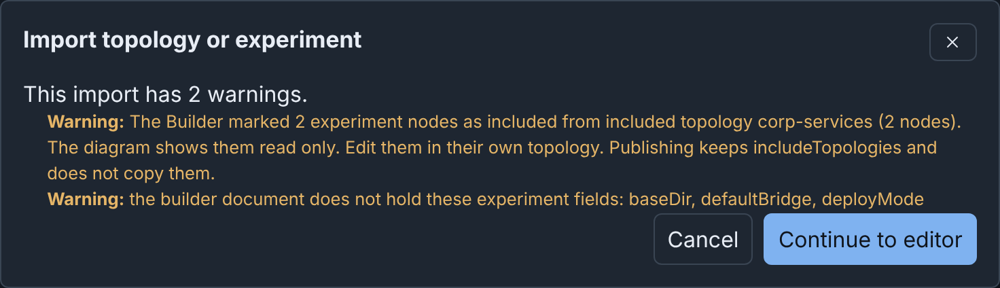
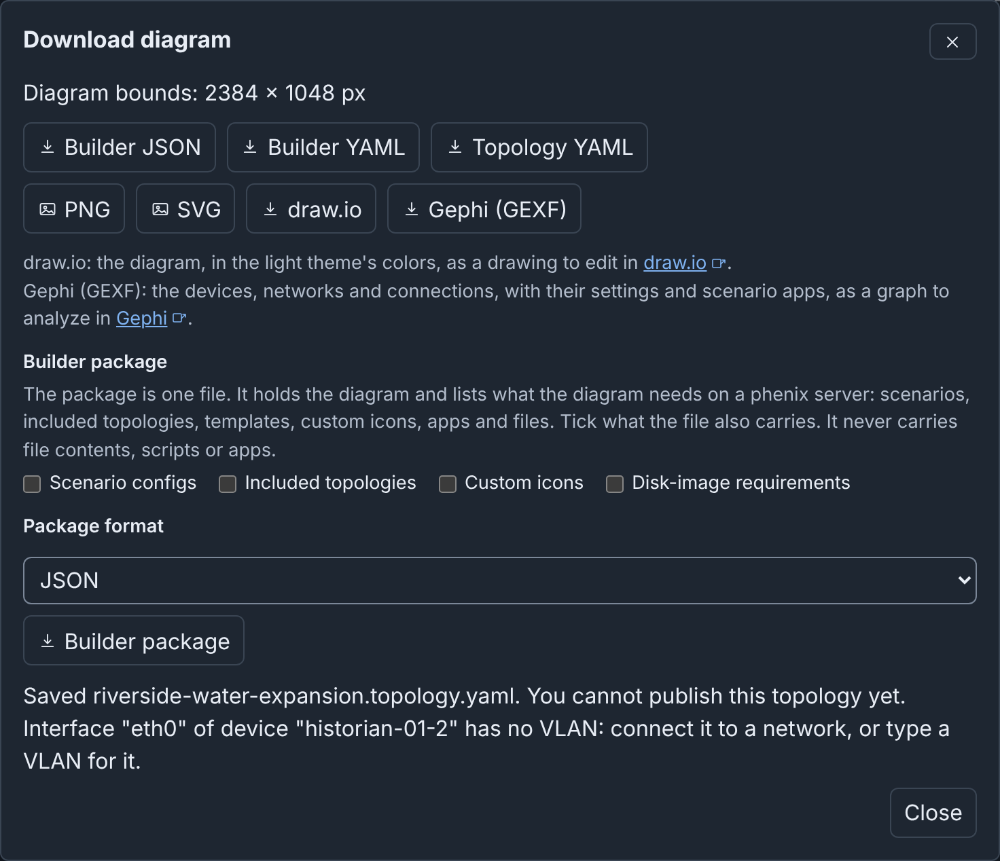

Import, Upload and Download: details¶
Info
This page holds every rule, limit and message of this feature. For the short guide, see Import, Upload and Download.
These pages use three words for these tasks:
- Import, on the drafts page or the Configs page, makes a draft from a Topology or Experiment config, stored in phenix or in a file. The phenix server converts the config into a diagram.
- Upload, on the drafts page or in the editor toolbar, opens a file that is already a diagram as a new draft: a Builder document, a Builder package, a published diagram or a legacy Builder diagram.
- Download, in the editor toolbar, saves the open diagram as a file, in one of seven formats, or as a Builder package.
Import, Download and the upload of a Builder document do not change a config on the phenix server. Only one upload task can write configs: the Create on this server option of a Builder package (see Moving a diagram with a Builder package). Other than that, only Publish writes configs (see Publishing).
To move a diagram, and what it needs, to another phenix server, download a Builder package and upload it there (see Moving a diagram with a Builder package). To show the diagram of a topology kept in files, see A Builder file beside a topology.
The examples on this page use the example lab.
Importing a topology or experiment¶
The draft holds what phenix would read from the config. The draft has the name of the source config, or the new topology name for a copy or a combined import.
From a stored config¶
To import the riverside-water topology:
- On the drafts page, click Import.
- Keep Source set to Stored config and Source kind set to Topology.
- In Source name, choose
riverside-water. The dialog shows Included topologies, because riverside-water includes corp-services. - Keep the default import options.
- Click Import. The dialog shows 1 warning: the 2 nodes from
corp-services are read only, and publishing keeps
includeTopologies. - Click Continue to editor.

An import without warnings opens the editor immediately. Cancel makes no draft. The open diagram does not change until the editor opens. If you close the dialog while it shows "Importing…", nothing is imported, even when the answer comes later.
In Source name, "(legacy Builder diagram)" marks a topology that the legacy Builder saved. The import converts its diagram. Publishing the draft to the same topology replaces the legacy diagram (see Converting a stored topology).
Importing an experiment¶
To import the riverside experiment:
- Click Import.
- Set Source kind to Experiment.
- In Source name, choose
riverside. - Click Import. The dialog shows 2 warnings.
- Click Continue to editor.

An imported experiment is different from an imported topology:
- If your role can list the stored Scenario that the experiment names, the draft lists it. If not, the draft lists no scenario, and the import warns. The import never keeps the copy of the scenario in the experiment, because a diagram names its scenarios and holds none.
- The VLAN aliases of the experiment become the VLAN alias of each network.
- The import does not keep the VLAN range, or experiment fields that have
no place in a diagram, such as
baseDir,defaultBridgeanddeployMode. A warning names these fields. - The import does not keep the files that experiment apps injected into VMs at start, and does not warn about them. It keeps the injections of the topology.
- The import removes the values that phenix added to the nodes when it
created the experiment, so the devices read like topology nodes:
- Each empty or null field, except a field that a topology must have,
such as the
interfacesof a network or thevlanof an interface. It removes a 0 or false only when phenix reads it as unset. A field that can be unset, such assnapshotor thecostof a route, keeps an explicit 0 or false. - Each value equal to the phenix default, also when the topology set
it:
vm_typekvm,snapshottrue,do_not_bootfalse,cpuBroadwell,vcpus1 andmemory512. External nodes keep these values.os_typestays, because a topology must have it. bridge_set_in_topo, and each interface bridge that phenix set to the default bridge of the experiment because the topology set none. Thus a bridge that you change in the draft stays when phenix creates an experiment from the published topology.
- Each empty or null field, except a field that a topology must have,
such as the
Importing a config file¶
To import pump-station.topology.yaml:
- Click Import.
- Set Source to Config file.
- In Topology or Experiment config, choose
pump-station.topology.yaml. The file can be JSON or YAML, up to 5 MiB. - Click Import.
With nothing selected, the Inspector of the new draft shows "Source file pump-station.topology.yaml" under Details.
The file must name its config in metadata.name. A draft from a config
file can only publish a new topology, also when a stored config has the
same name (see Publishing). Thus the dialog does not
offer a copy for a config file. It offers Included topologies when the
topology in the file includes others.
For an Experiment config file, the import finds the scenario by name among the stored Scenarios that your role can list. The copy in the file can be different, so the import warns when the draft lists the stored scenario. The draft then uses the stored scenario, not the copy in the file.
Builder keeps each ${NAME} and ${NAME:default} in a config file as
written. Unlike phenix config create, it never fills them in from the
environment of the server. For example, this interface imports with the
address ${STATION_WAN_ADDRESS:198.51.100.20}:
- name: eth0
type: ethernet
vlan: WAN
proto: static
address: ${STATION_WAN_ADDRESS:198.51.100.20}
mask: 24
gateway: 198.51.100.1
Edit the address in the draft before you publish it.
Import options¶
An Experiment has no import options.
Included topologies shows when the topology, stored or in a file, has
includeTopologies:
- Keep included nodes read only (the default): you cannot change the included nodes in the draft. Publishing keeps the includes (see Included topologies).
- Combine into one new topology: the import copies the included nodes into the diagram as ordinary nodes. Publishing creates a new topology. The import does not combine an included topology that you cannot read, or that phenix does not store. The draft keeps that include, and the import warns.
Create a new topology as a copy shows for a stored topology when Combine into one new topology is not selected. The draft is not linked to the source topology, and included nodes stay read only.
With either option, New topology name proposes the source name with
-copy or -combined, such as riverside-water-copy, and adds a number if
a topology has that name. The name follows the config name rule (see
Publishing a topology). It is at
most 512 bytes, and cannot be the name of an existing topology.
The draft links to no config. It gets a diagram note that names the
source, such as "Copied from riverside-water". For a config file, the note
gives the metadata.name of the file. Publish proposes the new name
and creates a new topology. It cannot update the source topology. Later
changes to the source topology, or to the combined topologies, do not reach
the draft.
To make the included nodes of a draft editable without a new import, use Combine included nodes into a new draft (see Included topologies).
From the Configs page¶
On the Configs page, the tag builder marks a topology with a Builder
diagram. The tag builder legacy marks a topology that the legacy Builder
saved. The tag is a link. When you select the name of a topology, a viewer
opens, with a button to the left of Edit Config:
| Topology | Tag (tooltip) | Viewer button | What opens |
|---|---|---|---|
Has a Builder diagram (builder-doc) |
builder ("open in Builder") |
Open in Builder | The diagram, in a draft (see Editing a published topology) |
Has a legacy Builder diagram (builder-xml) |
builder legacy ("import into Builder") |
Import into Builder | The Import dialog, set to the topology |
| Has no diagram | None | Import into Builder | The Import dialog, set to the topology |
The tag links and the viewer buttons need builder use, configs
list, and configs get on the topology. The import controls also need
configs create. Without these permissions, the tag is plain text and
the viewer has no button.
The edit button of a builder topology, and Edit Config in its viewer,
also open Builder. Without builder use, they show the alert "Only
Builder can edit this configuration". Other topologies, also
builder legacy topologies, open in the text editor (see
Legacy Builder).
What an import keeps¶
- Every node, as a device, with all of its settings.
- The node order: the devices of the config first, then those of each included topology. Publishing writes the nodes in this order, which is the order in which phenix starts the VMs.
- One network and one switch for each VLAN that the interfaces use, with each interface connected to the switch of its VLAN. The import does not connect an interface without a VLAN, or with white space in its VLAN. It warns about white space, because a network name cannot contain it.
- The devices of included topologies, read only, unless you combine them.
- The annotations of the config, such as
maintainer: range-team. The Inspector shows them when nothing is selected. Publishing does not write them. The import does not keep annotations whose names start withbuilder-. A draft keeps at most 100 annotations, and at most 256 KiB of them in total. The import warns about the others. - No positions: an import always uses the Default layout, with the devices in rows on a grid and the switches below them (see Layouts).
- No subnet or gateway for a network, because a config has none. To make Builder give addresses to the interfaces of a network, give its switch a Subnet (see Adding switches and networks).
A warning names all other changes.
Import needs configs get, and more permissions for some sources (see
What each task needs).
Uploading a Builder document¶
A Builder document is the Builder file format (see Builder JSON and YAML). Upload opens one as a new draft. The open draft does not change.
To upload pump-station.builder.json:
- Click Upload.
- Keep Source set to File.
- In Builder document file, choose
pump-station.builder.json. - Click Upload. The new draft gets the name in the document, "Pump station".

The dialog has three other sources:
- Paste text: paste the document into Document text (JSON or YAML). The draft has no source file.
- Published diagram: choose a diagram, then click Open. This opens the same draft as Edit as a draft (see Published diagrams). "(File)" after the name of a topology marks a diagram that phenix reads from a file on the server.
- Legacy Builder diagram or Topology: in Legacy diagram or Topology
file, choose a legacy Builder diagram file, or a Topology config file
that holds one in its
builder-xmlannotation. Then click Convert (see Converting a file).
Upload refuses these files, and gives the reason:
- A Topology or Experiment config. Import it (see Importing a config file).
- A node template file. Import it on the Node Templates tab (see Importing templates).
- A layer set file. Upload it on the Layers tab (see Layer set files).
- A file that is not JSON or YAML.
- An XML file. For a legacy Builder diagram, use the Legacy Builder diagram or Topology source. Builder cannot convert a draw.io or GEXF file.
- A file over 5 MiB.
A Builder document keeps everything, so a download and an upload give the same diagram. The draft keeps the maker and creation time that the document names (see Who made and last saved a diagram).
A Builder document from File or Paste text needs only builder
use. The other sources need more permissions (see
What each task needs).
Downloading¶
To download the Riverside Water diagram:
- Open the Riverside Water draft.
- Click Download. The dialog shows the size of the whole diagram, such as "Diagram bounds: 2384 × 1048 px".
- Click a format. The browser saves the file.
- Click Close.
The dialog makes one file at a time.

The command palette has a command for each format, such as Download PNG (see Command palette).
| Button | File for Riverside Water | What it holds | Open it with |
|---|---|---|---|
| Builder JSON | riverside-water.json |
The whole Builder document | Upload |
| Builder YAML | riverside-water.yaml |
The same, as YAML | Upload |
| Topology YAML | riverside-water.topology.yaml |
The Topology config that Publish would write | phenix config create, or Import as a config file |
| PNG | riverside-water.png |
A picture of the whole diagram | An image viewer |
| SVG | riverside-water.svg |
The same picture, as SVG | A web browser |
| draw.io | riverside-water.drawio |
The diagram, as a draw.io file | draw.io (diagrams.net) |
| Gephi (GEXF) | riverside-water.gexf |
The devices, networks and connections, as a GEXF file | Gephi |
| Builder package | riverside-water.package.json or .package.yaml |
The Builder document, the configs and icons that you tick, and the list of what the diagram needs | Upload |
The file name is the diagram name in lower case. Each run of characters
other than letters, digits, ., _ and - becomes one hyphen.
Download works in each draft that you can open, also a view-only draft, and in a published diagram. Before the dialog opens, Builder saves the changes that you did not apply in the Inspector (see Automatic snapshots). If it cannot apply them, the dialog gives the reason and saves no file.
Builder JSON and YAML¶
Builder JSON and Builder YAML hold the whole Builder document:
- Each node with its settings and position, and the networks, connections, groups, notes and layout.
- The scenario names (
scenarios), and the source of an import. - The
metadataof the diagram. - The colors and line styles of nodes and connections, and the description, border pattern and icon of each group.
- The subnet and gateway of each network that has them
(
networks[].subnetandnetworks[].gateway). - The layers (
layers), and the layer set that they came from, with its options (layerSet, see Layers). - The device templates (
templates). A linked template keeps its link insourcethrough a download and an upload (see Linked templates). - A copy of each custom icon that the diagram names (
icons), so the file opens the same on another phenix server (see The diagram and its icons).
A document starts with $schema: https://phenix.sandia.gov/schemas/builder/v1
and revision: 1. The phenix server gives the JSON Schema of the format at
/api/v1/schemas/builder/v1, with a title, a description and examples for
each field.
The metadata of a diagram¶
The metadata object is required. It holds only these fields:
| Field | What it holds |
|---|---|
id |
The identifier of the document. Each document needs one |
name |
The diagram name, at most 512 bytes. A draft uses it as its title |
description |
Free text about the diagram |
createdBy, createdAt, updatedBy, updatedAt |
Who made the diagram and who saved it last (see below) |
notes |
The notes of the diagram, which the Inspector lists under Notes. At most 100 notes. Each note is not blank, is at most 4096 bytes, and has no control characters other than line breaks and tabs |
The server refuses a document that has one of these fields outside
metadata, or another field in metadata. Publish writes no metadata to a
config.
Who made and last saved a diagram¶
The phenix server writes these four metadata fields each time it saves a
draft. The editor never writes them. The Inspector shows them under
Details (see With nothing selected).
| Field | What it holds | Set |
|---|---|---|
createdBy |
The user who made the diagram | When a draft is created: the createdBy that the document names, else the user who creates the draft. Each later save keeps it. |
createdAt |
When the diagram was made | With createdBy, the same way |
updatedBy |
The user whose save stored this content | On each save: the user who saves |
updatedAt |
When that save occurred | On each save: the time of the save |
The times are in UTC, to the second, such as 2026-09-29T18:17:59Z. A user
name is at most 256 bytes. All four fields are optional. A diagram without
them that opens read only from a file shows no Details.
- Blank diagram, Import, and a legacy diagram converted with Upload start with you as the maker, now.
- Edit as a draft on a published diagram or on a diagram read from a file takes all four fields from the document. After your first edit, you are the user who saved it last.
- Undo, Redo and Restore go back to an earlier snapshot, with
the
updatedByandupdatedAtof the save that made it.
Publish stores the document with the four fields that it has. They are part of the document, so they change its digest.
Note
A person who uploads a document or writes a Builder file can name anyone in these fields. Trust them only as much as those people.
source.updatedAt, in a document from Import, is a different time:
when the imported config last changed.
Topology YAML¶
Topology YAML is the Topology config that Publish would write for the diagram. The server makes and checks it the same way as Publish, but writes nothing. In the file:
metadata.nameis the name that the Publish dialog proposes: the diagram name with a hyphen for each run of characters that a config name cannot hold. Change it to store the file under another name.- The metadata has no annotations, from an imported config or from publishing.
nodesdoes not hold the devices of included topologies.includeTopologiesnames those topologies, as publishing does.- The
vlanof each interface is the name of its network. - The file does not hold note nodes, groups, drawings, colors, line
styles, icons, icon sizes, layers, device templates, positions, or the
subnet and gateway of a network. Each interface has its own
address,maskandgateway, which Builder can set from them.
To store the file in phenix as a Topology config named Riverside-Water:
Builder did not publish this config, so Configs does not open it in Builder. To store the topology with its diagram, publish the draft (see Publishing), or name the Builder file in the config (see A Builder file beside a topology).
When the diagram cannot be published yet, the dialog saves the file and lists each reason. Thus Topology YAML is a quick way to see each problem that publishing would report (see What blocks publishing). When phenix cannot accept the config at all, the dialog shows the error and saves no file.

Topology YAML needs configs get.
PNG and SVG¶
PNG and SVG draw the whole diagram, in the diagram bounds that the dialog shows. The longer side is at most 4096 pixels. On a high-resolution screen, a PNG gets more pixels within that limit.
The picture shows the diagram as the canvas draws it, but without the selection, connection points, handles, warning marks and info tooltips. Its background is white in the light theme and dark in the dark theme (see Themes).
Builder reads the images of custom icons from the server first. If it cannot read an image, the picture does not show that icon, and the dialog says so.
The SVG holds the diagram as HTML in foreignObject elements, and each
custom icon as an embedded PNG. Thus only web browsers show the full
diagram. Some drawing programs do not show the HTML parts.
draw.io¶
draw.io saves the diagram for draw.io (diagrams.net). In draw.io, select File > Open from > Device to open it. Builder cannot open the file, and a change in draw.io does not go back to the diagram.
The file has one page, with the diagram at its size in pixels:
- Each device and switch is a box with its icon, text, and fill and outline colors. A switch is round at its ends.
- Each group is a container: its nodes move with it. Its color is the color of its border.
- Each note, rectangle, circle, icon and line is a separate shape. A line keeps its points, line style and arrowheads.
- Each connection joins its two ends, with its label, color and line style, on the route from a layout.
- The Show node icons, Show node descriptions and Node icon size settings apply (see Settings). A description that its node hides is not in the file.
- The colors are those of the light theme.
- The file holds the custom icons. If Builder cannot read the image of an icon, the file shows the built-in icon, and the dialog says so.
Each device holds these settings as data (in draw.io, Edit > Edit
Data): hostname, type, os_type, image (the first disk image),
vcpus, memory, and interfaces, with one line for each interface, such
as "eth0: VLAN CORP, 10.10.20.254/24". The file holds no other settings,
and no secrets.
draw.io cannot show some parts of the diagram as Builder does:
- A double border shows as one thick line.
- The color bar of a note or a group has the color of its border.
- A line in a light color has no dark outline.
- The file does not hold the checks, the selection or the tooltips.
Gephi (GEXF)¶
Gephi (GEXF) saves the network as a graph for Gephi and other tools that read GEXF 1.3. Builder cannot open this file.
The graph has:
- A node for each device and each network. All the switches of a network are one node.
- An edge for each connection, from the device to its network. The edge label is the interface and its address, such as "eth0 10.10.30.20/24".
- The colors and positions of the diagram. A device has its fill color,
else its outline color, else the color of its type. A network has its
Edge Color. Hex and
rgb()colors stay. A color name, such asred, does not.
Notes, groups and drawings are not nodes. The Group and Groups columns of a node give its groups.
Each node and edge holds the settings of its device, network or interface as columns, such as Hostname, VLANs (text) and IP address. Each label and annotation name also gets a column, such as Label: zone. A column is in the file only when a node or edge has a value for it.
The Scenario apps columns list the apps of the diagram scenarios that run on each device. Download reads each scenario from the server first. If it cannot read one, the file has no app columns, and the dialog gives the reason.
Opening the file in Gephi¶
These steps use the menu names of Gephi 0.10 and 0.11.
- In Gephi, select File > Open.
- Choose
riverside-water.gexf. The Import report shows 16 nodes (12 devices and 4 networks), 15 edges and the graph type Undirected. - Click OK.
- Select Data Laboratory to see the columns.
To filter the graph in Gephi, use the Network and IP address
columns of the edges, or the VLANs (text) column of the nodes. That
column holds the VLANs of a device with | between them, such as
INTERNET|DMZ|CORP for edge-rtr.
Moving a diagram with a Builder package¶
Another phenix server may not have the scenarios, included topologies, custom icons and disk images that a diagram names. A Builder package is one JSON or YAML file. It holds the Builder document, the configs and icons that you tick, and a list of all items that the diagram needs. On upload, it shows which items the server has.
A package never holds the content of a file, a script or an app. It lists disk images, apps and files, such as injection sources, only by name.
Downloading a package¶
- Open the draft.
- Click Download.
-
Under Builder package, tick the items that the file carries:
- Scenario configs: the Scenario configs that the diagram names.
- Included topologies: the Topology configs that the diagram includes. The package lists an include that names a file, but does not read it.
- Custom icons: a copy of each custom icon that the diagram names.
- Disk-image requirements: the disk images that the devices boot from, each with the devices that use it.
At first, no box is ticked. The file always lists the scenarios, included topologies, templates and custom icons of the diagram, the apps of its scenarios, and the files that its devices and packaged configs name.
-
In Package format, choose JSON or YAML.
- Click Builder package.
If a config does not exist, or your role cannot read it, the package lists
it but does not carry it. The dialog names that config. Click Save
package or Do not save. A carried config has no creation and update
times, and no builder-* annotations.
The list of requirements holds at most 1000 entries of each kind. Each entry is at most 4096 bytes long and has no control characters. The list does not hold an entry outside these limits, and the dialog names it. Each warning shows its error code.
The requirements of a package list scenarios, topologies,
templates, icons, images (each with the devices in usedBy), apps
and files. For an example, see
pump-station.package.yaml, with
Scenario configs and Disk-image requirements ticked.
Uploading a package¶
- Click Upload.
- Choose the package file, as for a Builder document (see Uploading a Builder document).
-
Click Upload. The dialog lists what the diagram needs. Each entry shows its status, and "in the package" when the file carries it:
- Present: the server has it. For a config or an icon, the server has one of that name with the same content as the package copy.
- Missing: the server does not have it.
- Different: the server has a config or icon of that name with other content. Builder does not change it.
- Not checked: the server cannot check it, for example because your role cannot read that config, or cannot list disk images or apps. The server does not check disk images when it lists none, as when minimega is not running, or when it does not list them in 10 seconds. It never checks files.
Builder looks for a disk image or an app among those that your role can list. An image or an app that your role cannot see shows Missing. A drive image is present when a server image has the same file name, in another path. The entry names the image that matched.
-
For each missing config to create, tick Create on this server. Only a missing Scenario or Topology config in the package has this checkbox. Builder never replaces a config that the server has.
- Click Continue to editor. Builder creates the ticked configs, one
at a time. Each needs
configscreate. Builder adds the missing custom icons to the icon library of the server. Then it opens the diagram as a new draft.
The diagram names its scenarios and topologies as the file does, also when you did not create them.

While Builder creates the configs and adds the icons, Cancel and closing the dialog have no effect. If a config or an icon fails, Builder still creates the other configs. The dialog names the created configs and gives the reason for each failure before it opens the diagram. Cancel then opens nothing, but the created configs stay.
The server refuses a package whose configs have builder-* annotations.
The phenix server gives the JSON Schema of the format at
/api/v1/schemas/builder/package/v1.
Layer set files¶
A layer set file holds one layer set of the library, as YAML or JSON (see The Layers tab). A diagram carries its own layers in its Builder document, not in a layer set file.
Downloading a layer set¶
On the Layers tab of the drafts page, click Download on the card
of the set. Builder saves a YAML file with the name of the set, in the
same form as a diagram file name, and .layers.yaml at the end. The
built-in set Purdue Model gives purdue-model.layers.yaml.
The file does not hold the ID, version, times or users of the set. It holds the layers with the highest layer ID first. It carries a copy of each custom icon that the set and its layers name, at most 50. It names the built-in icons, but does not carry them. If the icon library does not have a custom icon, Builder says so.
$schema: https://phenix.sandia.gov/schemas/builder/layersets/v1
name: Plant layers
description: Layers of the plant network.
iconKey: plc
matchConflict: lowest
layerOutlines: true
layers:
- id: 1
label: Control
iconKey: plc
color: '#db2777'
matchers:
general.hostname: ^plc-
- id: 0
label: Field
iconKey: transmission
color: '#dc2626'
$schema(required) names the format. Its JSON Schema is at/api/v1/schemas/builder/layersets/v1.name(required),description,iconKey(a built-in icon) andicon(a custom icon) describe the set.matchConflict(lowestorhighest) selects the layer of a device that the matchers of more than one layer match.layerOutlines: truecolors node outlines with the layer color.layers(required): each layer has anidand alabel, and can haveiconKey,icon,colorandmatchers(see Layers).icons(optional) holds copies of custom icons, by icon name.
Uploading a layer set¶
- On the Layers tab of the drafts page, click Upload layer set….
- Choose a YAML or JSON layer set file, up to 4 MiB.
Builder adds the file to the library as a new set. If the library has a set of that name, the new set gets a number, such as "Purdue Model (2)". The custom icons in the file go to the icon library of the server first (see The diagram and its icons). If an icon cannot go there, Builder adds the set and gives the reason.
If Builder cannot use the file, it adds nothing. The tab lists each problem and its location in the file. Upload on the drafts page and in the editor refuses a layer set file.
Builder documents and phenix config create¶
A Builder document is not a config. phenix config create refuses one
named on the command line, and skips one in a directory:
$ phenix config create pump-station.builder.json
Error: pump-station.builder.json is a Builder document, not a configuration. Upload it in the Builder or send it to the Builder REST API (/api/v1/builder/drafts). Then publish it to create its topology
$ phenix config create examples
2026-10-01 21:51:05.962 INF skipped Builder document. Upload it in the Builder to publish it type=SYSTEM path=examples/pump-station.builder.json
2026-10-01 21:51:05.994 INF configuration created type=SYSTEM kind=Topology name=pump-station
The same is true for a template file, a Builder package and a layer set
file. phenix config create skips one in a directory, with a debug log
line. It refuses one named on the command line:
$ phenix config create node-templates.yaml
Error: node-templates.yaml is a Builder template file, not a configuration. To add its Node Templates, use Import templates in the Builder or the Builder REST API (POST /api/v1/builder/templates/items)
$ phenix config create pump-station.package.yaml
Error: pump-station.package.yaml is a Builder package, not a configuration. Upload it in the Builder to open its diagram
$ phenix config create purdue-model.layers.yaml
Error: purdue-model.layers.yaml is a Builder layer set file, not a configuration. Use Upload layer set on the Layers tab of the Builder to add its layer set
In the phenix config create examples command above, examples holds the
example configs. From a script, use
the Builder REST API.
A Builder file beside a topology¶
A topology in a repository can keep its diagram there too, as a Builder
JSON or Builder YAML file. Name the file in the builder-doc annotation of
the Topology config:
metadata:
name: pump-station
annotations:
builder-doc:
path: /phenix/topologies/pump-station/pump-station.builder.json
After phenix config create, the Published Diagrams tab lists the
topology with the tag File. Its diagram opens from the file. The file
must be on the phenix server, below /phenix. See
Builder documents in files
for the rules, and what Publish does with such a topology.